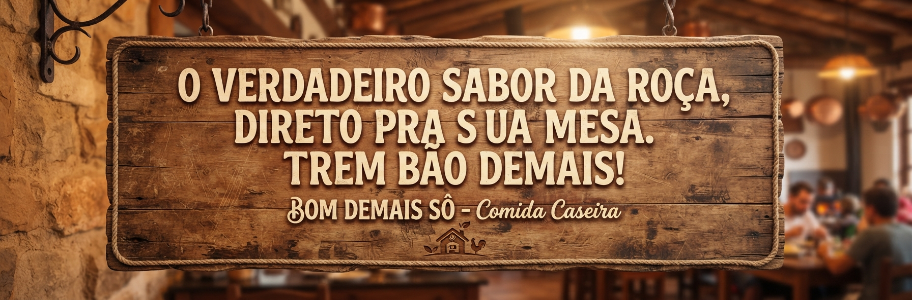

A gente costuma dizer que comida boa não precisa de segredo, precisa de afeto. O Bom Demais Sô nasceu da nossa paixão por reunir a família em volta do fogão à lenha, onde a prosa era boa e a panela nunca estava vazia...
Decidimos trazer esse aconchego para o dia a dia de quem corre na cidade, mas não abre mão daquele almoço com gostinho de infância. Aqui, cada ingrediente é escolhido a dedo, o tempero é fresco e o resultado... uai, é bom demais sô!